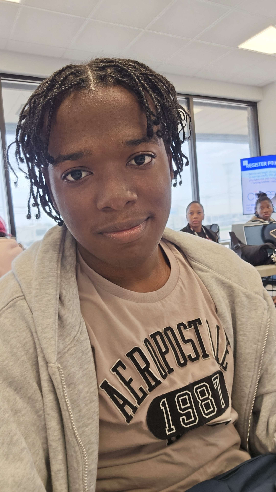

Andre Morrison
I'm a Computer Science student who has always been interested in technology and how it can be used to make everyday life easier. In my other courses i've enjoed learning about computers, programming, software development, and the different ways technology can solve real-world problems. One of the things I like most about Computer Science is that it challenges me to think carefully, be creative, and find solutions when problems arise. As I continue my studies, I hope to improve my skills, gain more hands-on experience, and build a career where I can use technology to create useful systems and make a positive difference.
I am interested in Web Development because I enjoy creating things that people can actually use and interact with. Web Development allows me to be creative while improving my technical abilities in areas such as HTML, CSS, JavaScript, and databases. I like that Web Development is constantly changing, which gives me the opportunity to keep learning new technologies and improving my skills.
